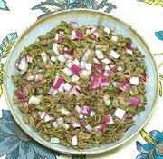

|
Jonjoli SaladGeorgia - Jonjoli | ||||
| Makes: Effort: Sched: DoAhead: |
13 oz * 45 min hrs Yes |
Jonjoli is much favored for celebration tables in Georgia. It is always pickled, and served as an appetizer. Jonjoli has a unique, slightly floral flavor. | |||
|
25 7 3 3 1/4 |
oz oz T T t |
jar Jonjoli (1) Onion, red Wine Vinegar (2) Olive Oil ExtV Pepper |
Since fresh Jonjoli trees don't grow very far from Georgia, we use a jar of pickled Jonjoli imported from Georgia. This recipe will make about 5 appetizer salads. Make - (10 min - 10 min work)
|